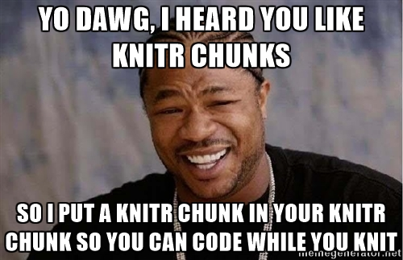
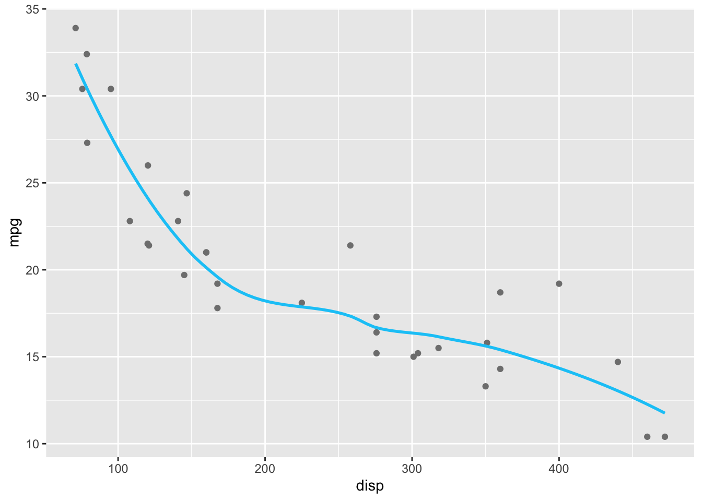

install.packages("rmarkdown", type = "source")
Important
This post is outdated; it would still work if you want to go this route, but the current site is built using Quarto and I think it’s a HUGE improvement
There may be a special place in hell for blog posts like this that document how someone put together their static site website and hosted it on GitHub. Especially when there is really great documentation availible that has been put together by really smart people1. You can even look at Rmarkdown’s website source code on GitHub to see how they approached things and to get ideas. I should warn anyone interested in building a site with
rmarkdownthat you will not have some of the automation perks from Jekyll or Pelican with automatic tags and summaries created to extract from blog posts and render them on your home page. I decided to not retain any of the category or tag metadata that normally went into the<head>tag to be used for summarising because I wanted to keep things simple(text file blog). If that doesn’t sound like something you like, this may not be the right choice for your blog.
Quick aside–feel free to skip
When I first began learning to code I felt insecure about not having given any attention to math or computer science courses during my undergrad. Without hesitation I had the best 4 5 years of my life at UCLA (with one whole year spent in Paris for courses during the academic year and a summer in Germany and Scandinavia). Nevertheless, I worried that the most technical thing I did was the introduction to statistics course2 I needed to satisfy my math requirement and an introduction to formal logic, which was a requirement as a philosophy major. So, I tried emulating hardcore programmers when I began coding in Python by only using Vim in my terminal3 or Jupyter notebooks. After facing the truth of my insecurity and accepting my shadow4 I finally began using RStudio two months ago and I really can’t say enough nice things about RStudio after having spent lots of time coding in R. When I saw that there was a way to create websites with rmarkdown it immediately connected with me that if I put in a little work now I might actually blog in the future. Since this is my second post this week, I think it was a good idea.
What you’ll need installed
- RStudio Preview Release so you can get the ‘build’ pane
rmarkdown(v0.9.6) which you can install from CRAN thusly:
What files you need in your site’s directory
After you have installed the preview version of RStudio and have the the correct version of rmarkdown there are two required files that are the minimum for building a site:
- A
_site.yml5 file - An
Index.Rmdfile
Here are example files you can use
Or, you can clone the example site RStudio graciously put together.
_site.yml
name: "Your Site's Name"
output_dir: . # necessary for hosting on GitHub; just add it for now
navbar:
title: "Your Site's Title"
left: # you can also use 'right'
- text: "Home"
icon: fa-home # handy way to use FontAwesome icons in nav!
href: index.html # don't link to the .Rmd file
- text: "About"
icon: fa-newspaper-o
href: about.htmlA couple of things about the yml file:
output_dir: .changes the default behavior of placing rendered files into a_sitedirectory to dumping them in the directory with yourRmdfiles. This can start to look a little messy so decide on some naming conventions to help with all the files you’ll be generating.- If you care about having an image in your
navbar, want to add thefixedclass from Bootstrap to thenavbar, or if you want to usejqueryfunctions within theonclick=attribute then you’re going to need to create a_navbar.html6 file rather than declare it in theymlfile.
TIP: If you want some of these things but don’t want to write the
htmlfrom scratch, you can do what I did: finalize thenavbar’s structure in theymlfile, render it, open yourindex.htmlfile, and copy everything from<navbar>to</navbar>into an RStudio text file. Then all you need to do is save that file as_navbar.html, delete thenavbarsection from yourymlfile, and then re-build. You can also look at this example from thermarkdownsite.
- The
iconfield is set with a Font Awesome icon, which I really, really, enjoy. You can even use Ionicons or Bootstrap Glyphicons as well.
index.Rmd
---
title: "My Site's Title"
---
Welcome to my site!about.Rmd
---
title: "About me"
---
A little more about my background ...Build it!
Go ahead and click on ‘Build Website’ to see your beautiful creation!
I don’t know if anyone else will run into this error, but when I first tried to build my site the build pane threw this error message:
Error in loadNamespace error: there is no package called 'rmarkdown'. I found that this was helpful in trying to get the site to build—you may not see this error message at all though and it might be due to my having altered the default directory in.libPaths().
Customize
This is my favorite part because you can begin adding your own touches to things. A good first step is to set the theme in your yml file to one of these themes. You can also add custom css with the css tag—you just have to leave the file in the same directory as everything else. I’ll share my yml file here so you can see what I’ve done (or you can see if I’ve made changes since posting this by checking here):
_site.yml
name: "rbmv | critical data analysis"
output_dir: .
output:
html_document:
theme: yeti
highlight: pygments
include:
after_body: footer.html
css: style.cssAs you can see there isn’t a lot going on here. You may also notice that I am not using the _site.yml file for the navbar—this is because I am using a separate _navbar.html7. In fact, I have two navbar files: one for the home page and the other for the rest of the site’s content. I did this because I want the navbar links to behave differently and direct to different places on the homepage as opposed to the rest of the site. This is just prefrence.
The great thing about rmarkdown is that each page has yml fields and you can control content really easily with includes. You only need to exclude whatever is default and include whatever you want to replace it with for that page. Here’s an example of this blog post’s yml metadata:
blog-building-site-with-rmarkdown.Rmd
---
title: "BUILDING THIS SITE WITH RSTUDIO AND RMARKDOWN"
author: "Robert Mitchell"
date: "September 1, 2016"
output:
html_document:
excludes:
after_body: footer.html
includes:
after_body: footer-disqus.html
---I excluded the footer.html file that is set in the html_document: include: after_body: field to include, instead, a footer file that has the Disqus JavaScript function so that comments appear on blog posts only. You can also include a navbar file using the html_document: include: before_body: navbar.html field, which I used only for my index file to keep things simple. It would be a good idea to keep this site handy since html_document has a ton of flexibility. Some of you that are very knowledgeable about rmarkdown will likely run with the possibilities.
Things that weren’t initially clear
A few things I had to figure out on my own, which I’ll share to make things easier.
Summarising content for the home page
So this is probably the most painful thing you’ll have to do but it isn’t so bad! Once a post is finished, you’ll have to add the HTML to the index.Rmd file and link to the page. Tools like Jekyll and Pelican handle a lot of this stuff automatically, but it isn’t too bad once you have an idea of how you want it to look. This is what I do:
- Finish blog post.
- Add the post and summary / date info to the
blog.Rmdfile. - Copy that HTML into the
index.Rmdfile with the three most up-to-date blog posts.
I find it easiest to leave a template in comments that I can just fill in the blanks from the blog post I’ve finished. I don’t think this is too much work. Also, RStudio may come up with some new tooling soon, you never know!
blog.Rmd
<!---
entries will follow this format:
<article>
<h3><a href=""> </a></h3>
<div class="summary">
<span><i class="fa fa-calendar"></i> _date_</span>
<p> ...</p>
<a class="btn btn-outline-primary btn-sm" href="">Full Post</a>
</div>
</article>
--->
<article>
<h3><a href="blog-the-move-to-r.html">THE MOVE TO R</a></h3>
<div class="summary">
<span><i class="fa fa-calendar"></i> _2016-08-29_</span>
<p>This is _not_ a language wars type post. I do not think there is some Mordor forged language to _rule them all_. I debated whether or not to even write a post like this. Nevertheless, I had a chance to meet and talk to [Jake Powray](https://twitter.com/jakeporway) from [DataKind](http://www.datakind.org) at the [DoGoodData](http://www.dogooddata.com) conference and I...</p>
<a class="btn btn-outline-primary btn-sm" href="blog-the-move-to-r.html">Full Post</a>
</div>
</article>Anchor tag in page links missed location
On my home page I use the smooth scrolling function to move between the summarized content with anchor links and the id attribute. Since I added the fixed class to my _navbar.html file, I forgot to adjust for those pixels. This was fixed with the following CSS:
style.css
a.anchor {
display: block;
position: relative;
top: -45px; /* fixed navbar height */
visibility: hidden;
}Displaying CSS in a code chunk
To get CSS to display in this blog post I had to git checkout gh-pages in the clone of rmarkdown that I made (which I recommend!) to see what they did to display CSS. I mostly use the following format for code chunks: {r, eval=FALSE}, {html, eval=FALSE}, {python, eval=FALSE}, or any of the other engines knitr can handle. {css, eval=FALSE} wouldn’t render for me when writing this post. Instead I had to use the following:
```css
.someClass {
color: #FFFF00;
}
```
Also, how do you put a code chunk in a code chunk?

Sorry, I had to do that. Trying to render the above CSS chunk proved harder than I thought. It lead me to try and figure out how to put a code chunk in a code chunk (and I thought of the ‘yo dawg’ meme right away). Boosted strait from RStudio’s site, this is how you accomplish it if you ever need to know:
<pre class="markdown"><code>```css
.someClass {
color: #FFFF00;
}
```
</code></pre>Getting Disqus to work
First you’ll need to set up an account with Disqus. The instructions are pretty self expanatory for installing Disqus on your page. Once you’ve followed all the instructions, you should be able to navigate to the ‘Installation’ tab, which presents you with options for installing. You’ll need to select “I don’t see my platform listed, install manually with Universal Code”. You’ll be presented with a Jacascript function to place in your site.
I initally didn’t follow Disqus instructions and tried to make it work the way RStudio had it set up in their footer but couldn’t get it to work—what I did was first add the script tag that gives you a count of comments (step 1 under the ‘How to display comment count’) and then add just the function right after (step 1). If you look at the commented out section in the function, you’ll see that Disqus wants you to set two variables and uncomment, but I couldn’t seem to get them to work with my site set up the way it is. If anyone has any insight into how the variables could be set up with an rmarkdown website, let me know in the comments!
<!-- disqus -->
<script id="dsq-count-scr" src="//rbmv.disqus.com/count.js" async></script>
<div id="disqus_thread" class="disqusPadding"></div>
<script>
(function() { // DON'T EDIT BELOW THIS LINE
var d = document, s = d.createElement('script');
s.src = '//rbmv.disqus.com/embed.js';
s.setAttribute('data-timestamp', +new Date());
(d.head || d.body).appendChild(s);
})();
</script>
<noscript>Please enable JavaScript to view the <a href="https://disqus.com/?ref_noscript">comments powered by Disqus.</a></noscript>Syntax highlighting
I’m not a big fan of the options we inherit from Pandoc. Also, the CSS generated from code chunks seems kind of arbitrary and doesn’t work with Pygments (which is a shame because there are many Pygments CSS files to be found online!). From what I can tell here the markup classes come from the highlighting-kate package. When I looked at the Solarized webpage, there’s a link to the pages css that gave me a bit of a head start. I tweaked it a bit to try and make the chunks look like the syntax highlighting in R, but it isn’t perfect. If you would like to use my highlight theme, just copy this into your CSS:
style.css
root: {
--base03: #002b36; /* background */
--base02: #073642; /* other background */
--base01: #586e75; /* comments / secondary content */
--base1: #93a1a1; /* body text / default code / primary content */
--yellow: #b58900; /* keyword */
--orange: #cb4b16; /* constants */
--red: #dc322f; /* regex, special keywords */
--magenta: #d33682; /* not sure what to do with this color yet */
--violet: #6c71c4; /* not sure what to do with this color yet */
--blue: #268bd2; /* reserved keywords */
--cyan: #2aa198; /* strings, numbers */
--green: #859900; /* operators, other keywords */
}
/*
* Solarized Dark
* http://ethanschoonover.com/solarized
*/
pre, code { font-family: 'Roboto Mono', monospace ; font-weight: 300; }
pre { background-color: var(--base03); color: var(--base1); }
code.sourceCode .kw { color: var(--blue); font-weight: 700; } /* Keyword */
code.sourceCode .dt { color: var(--cyan); } /* DataType */
code.sourceCode .dv { color: var(--base01); } /* DecVal */
code.sourceCode .bn { color: var(--orange); } /* BaseN */
code.sourceCode .fl { color: var(--cyan); } /* Float */
code.sourceCode .ch { color: var(--red); } /* Char */
code.sourceCode .st { color: var(--green); } /* String */
code.sourceCode .co { color: var(--base01); font-style: 100i; } /* Comment */
code.sourceCode .ot { color: var(--base1); } /* Other */
code.sourceCode .al { color: var(--green); font-weight: 700; } /* Alert */
code.sourceCode .fu { color: var(--blue); } /* Function */
code.sourceCode .er { color: var(--red); font-weight: 700; } /* Error */
code.sourceCode .wa { color: var(--base1); font-weight: 700i; } /* Warning */
code.sourceCode .cn { color: var(--orange); } /* Constant */
code.sourceCode .sc { color: var(--red); } /* SpecialChar */
code.sourceCode .vs { color: var(--cyan); } /* VerbatimString */
code.sourceCode .ss { color: var(--cyan); } /* SpecialString */
code.sourceCode .im { color: var(--red); } /* Import */
code.sourceCode .va { color: var(--blue); } /* Variable */
code.sourceCode .cf { color: var(--green); font-weight: 700; } /* ControlFlow */
code.sourceCode .op { color: var(--yellow); } /* Operator */
code.sourceCode .bu { color: var(--blue); } /* BuiltIn */
code.sourceCode .ex { } /* Extension */I rand the code chunk above as
{html, eval=FALSE}because some of the CSS variables were being classified as.er, which looked really off. I’m still working on the best solution for the syntax highlighting.
You can also go crazy with this and create your own theme that mimics whatever color scheme you are going to use for your site. I thought these colors looked good with my site’s color scheme and the colors I plan to use for data visualizations are still in the works—I will likely change them pretty often.
Put some ggplot2 in a post!
The most rewarding part about writing blog posts in rmarkdown is that you can really dive into an analysis workflow and it is automagically a blog post. It’s so easy—you just leave your code chunk as is or pass eval = F if you just want to show some code8 or echo = F to hide or display code the way you want to.
suppressPackageStartupMessages(library(ggplot2))
suppressPackageStartupMessages(library(dplyr))
# these are the colors I wanted to use for the site; may not be good for viz
rbmv_palette <- c("#BFF073", "#0DC9F7", "#7F7F7F", "#F05B47", "#ED1C24")
mtcars %>%
ggplot(aes(x = disp, y = mpg)) +
geom_point(color = rbmv_palette[3]) +
geom_smooth(formula = y ~ x, se = F, method = "loess",
color = rbmv_palette[2])
When using
ggplotin this way, it creates a directory with an image file to use when creating the HTML. One of the reasons its easier to just use Plotly for web/interactive type stuff.
Ok, but how do I add plotly to a page?
I’ve been really into Plotly lately and one of the first things I wanted to do was add it to my website. There are a couple of hoops you have to jump through but luckily there is the wonderful 9. Oh, and pipes. Plotly loves htmltools package to help out%>%’s. I’ll just redo the plot above so you get an idea.
suppressPackageStartupMessages(library(plotly))
rbmv_palette <- c("#BFF073", "#0DC9F7", "#7F7F7F", "#F05B47", "#ED1C24")
mtcars <- mtcars[order(mtcars$disp), ]
mtcars %>% plot_ly(x = ~disp, y = ~mpg,
type = "scatter", mode = "markers",
text = ~paste(rownames(mtcars), "<br>Mpg: ",
mpg, "Disp: ", disp),
showlegend = FALSE,
colors = rbmv_palette) %>%
add_lines(x = ~disp, y = ~fitted(loess(mpg ~ disp)),
mode = "lines", name = "Loess Smoother",
showlegend = TRUE,
line = list(color = rbmv_palette[2])) GitHub Pages
You really don’t need to do a whole lot to host on GitHub. GitHub has really helpful instructions where you can see the two kinds of GitHub pages: a user or organizational account (which is what you’ll use for your blog), or a project page. The only other thing you’ll need to do is creat a .nojekyll file in your repository which you can do quickly in Bash:
touch .nojeckyllIf you’ve purchased a domain and want to use it, you’ll need a CNAME file in your directory as well. This is a really easy file to create:
CNAME
vim CNAMEYou are now in Vim, a text editor, and if you’ve never been here will be really confused! So just follow these steps:
- Press the
ikey to ‘insert’, or, type into the text editor. - type your url into the file, in my case:
robertmitchellv.com- Hit the
esckey to exit ‘insert’ mode - Type the
:key to enter a command (you enter the command at the bottom of the terminal window) - Type ‘wq’ and then hit
return
Ok, that was sneaky, you can also just create a new file in RStudio (text file) and enter it that way and save it. That will be much easier!
That’s it!
That’s really all I’ve done so far. I just rebuilt this site last week and I’m likely to learn a lot more as I continue but wanted to share what I’ve learned for anyone interested.
Footnotes
If only I had paid more attention in this course! I just wasn’t ready to dive into this subject at the time. Perhaps if we started with bootstrapping instead of the normal distribution and Chebyshev’s theorem I would have saw how interesting statistics is and how probability is really fun when coming from a philosophy background.↩︎
I spent so much time trying to figure out other people’s complicated
.vimrcfiles before I was even ready to utilize some of the shorthands that others were using for their own workflows—sometimes it’s ok to just start at the beginning and facing that realization was important.↩︎This is a sneaky way to introduce people to Jung’s notion of the shadow, which I find to be a very powerful and interesting concept.↩︎
Although a
ymlfile, andRmdfiles you place a ’_’ in front of will not be rendered. This can be useful for staging blog posts or for files you want to include in others. AllRmdfiles are rendered when you click ‘Build Website’.↩︎You don’t need to include your navbar if it is named
_navbar.html—it will automatically be included when you build your site.↩︎I had to do this for some Python code from older blog posts—the syntax highlighting wasn’t exactly as it should be but it looked ok.↩︎
You used to have to pipe your plotly object through
as.widget() %>% list() %>% tagList()to get it to display on the site; however, now you don’t need to do anything!↩︎